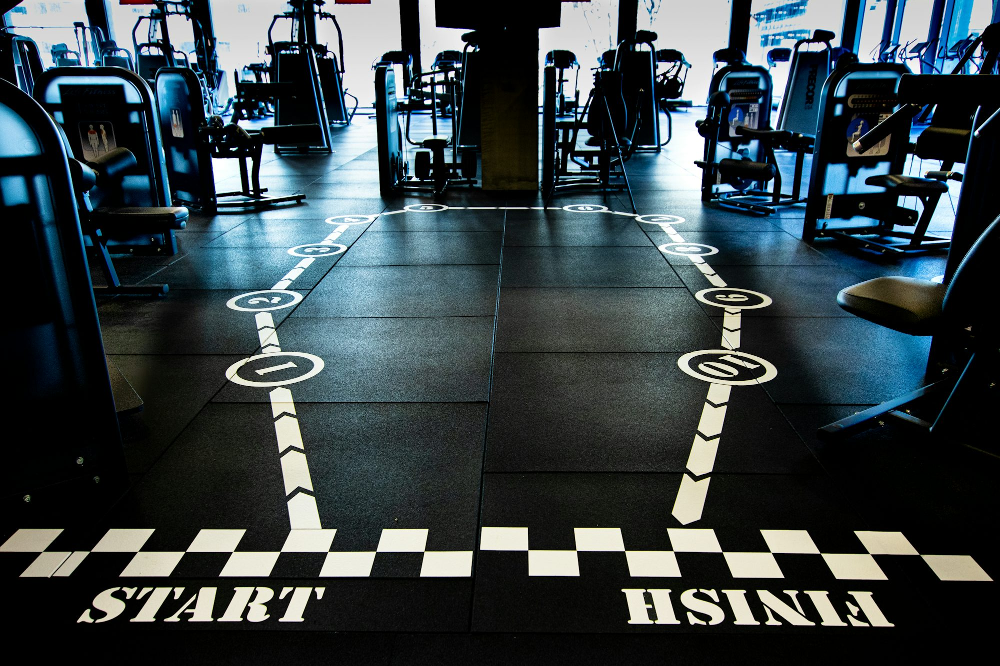
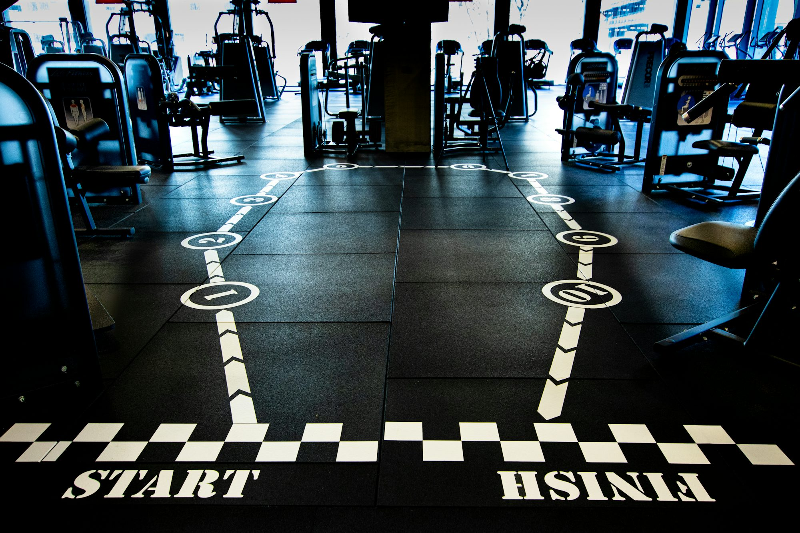
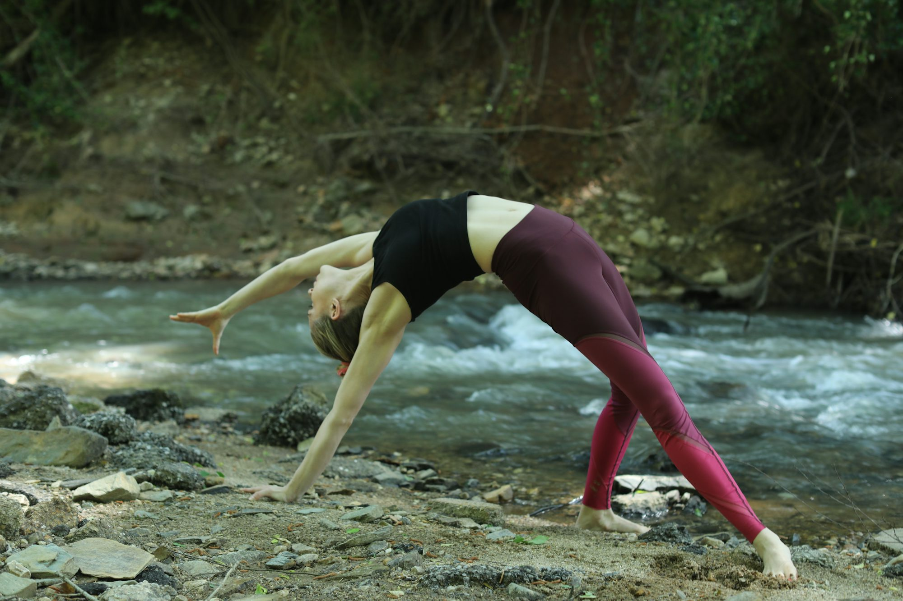

Energizing Your Day: The Ultimate Guide to Pre- and Post-Workout Nutrition
This article explores the importance of nutrition before and after workouts, detailing the best food choices to maximize performance and recovery.Album
 
January 13, 2025
Liam Carter
Energize Your Day: The Ultimate Guide to Morning Workouts
This article provides insights into the benefits of morning workouts and offers tips on how to effectively incorporate them into your daily routine.

March 27, 2025
Sophia Carter
Exploring the Art of Mindful Living: A Path to Inner Peace
This article delves into the concept of mindful living, its benefits, and practical steps for integrating mindfulness into everyday life for enhanced well-being.
Liam Thompson
Harnessing the Power of Superfoods: A Guide to Boosting Your Fitness Journey
An insightful article exploring superfoods that can enhance health and fitness, providing essential nutrients for an active lifestyle.
September 20, 2025
Emma Johnson
Exploring the Benefits of High-Intensity Interval Training (HIIT)
This article discusses the fundamentals and advantages of High-Intensity Interval Training (HIIT), highlighting its effectiveness in improving fitness levels and overall health.
Finding Balance: The Integration of Mindfulness in Fitness Routines
September 06, 2025
Sophia Turner
October 28, 2025
Elena Ramirez
The Rise of Online Fitness: Transforming the Way We Work Out
This article examines the growth of online fitness platforms, highlighting their benefits, challenges, and how they are changing the landscape of personal fitness.
July 07, 2025
Daniel Rivera
The Joy of Movement: Crafting a Personalized Fitness Experience
This article explores the importance of creating a personalized fitness journey that incorporates diverse activities to enhance health and well-being.